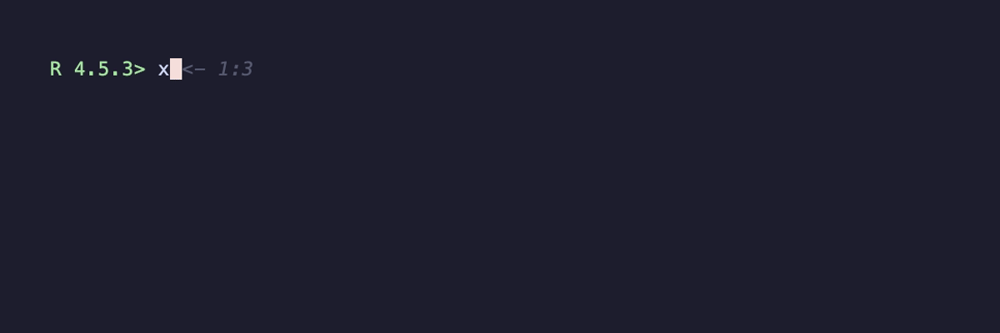
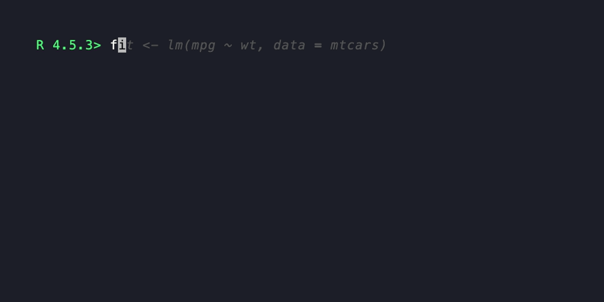

Animated GIF demos of R code, generated by an R one-liner. Wraps charmbracelet/vhs.
Installation
# install.packages("pak")
pak::pak("schochastics/vhsR")vhs itself plus its runtime dependencies (ttyd, ffmpeg) are downloaded into a per-user cache on first use:
library(vhsR)
vhsr_install() # one-time setup
vhsr_doctor() # confirms everything is in placeOn macOS, vhsr_install() will print a brew install line for ttyd and ffmpeg (those have no usable upstream binaries for macOS); on Linux and Windows everything is downloaded automatically.
Usage
record_demo({
x <- 1:5
mean(x)
head(cars, 3)
}, output = "demo.gif")That writes demo.gif next to your working directory. The GIF shows the code being typed at a real R prompt, with output appearing as it would in an interactive session.

Styling
record_demo(
{
fit <- lm(mpg ~ wt, data = mtcars)
summary(fit)$coefficients
},
output = "fit.gif",
width = 1000,
height = 500,
font_size = 20,
theme = "Dracula",
typing_speed = "100ms",
playback_speed = 1.25
)
Pacing
Four extra timing args control how the recording feels:
-
start_pause— sleep between R startup and the first typed line (default"800ms"). -
end_pause— sleep before the (hidden)q()exit (default"500ms"). -
paragraph_pause— when set, blank lines inexprbecome a sleep of this duration instead of being typed. -
typing_speed_jitter— numeric in[0, 1]; per-line typing speed is sampled within±jitteroftyping_speedso the recording feels less mechanical. Callset.seed()first for reproducibility.
record_demo(
{
x <- 1:5
mean(x)
head(cars, 3)
},
output = "paced.gif",
paragraph_pause = "1s",
typing_speed_jitter = 0.3
)Recording from a script file
If the demo lives in a .R file, point at it directly:
record_demo_file("examples/demo.R", output = "demo.gif")Equivalent to inlining the file’s contents in record_demo(). Syntax errors are caught up-front with a pointer to the file path.
Single-frame screenshot
For static documentation — prompt, code, and output in a PNG instead of a GIF:
record_demo_screenshot(
{
fit <- lm(mpg ~ wt, data = mtcars)
summary(fit)$coefficients
},
output = "fit.png"
)By default the screenshot is taken after the last typed line. Pass at = "after:N" (1-indexed) to capture after a specific line.
Knitr / Rmd chunks
vhsR registers a vhsr knitr engine on package load, so you can drop a chunk into a vignette, README.Rmd, or pkgdown article:
The chunk records a GIF at output= and inserts the corresponding markdown image-include in the rendered document. Forwarded chunk options: output, width, height, font_size, theme, typing_speed, playback_speed, line_pause, backend.
Embedding in HTML
For Rmarkdown documents or Shiny apps that want playback controls:
vhsr_widget("demo.mp4")Returns an htmltools::tagList. .gif becomes a styled <img>; .mp4 / .webm become a <video controls loop muted playsinline> with the appropriate MIME source. width / height accept either numerics (treated as pixels) or strings ("100%", "50vw", …).
Escape hatch
For full control over the recording, write a .tape script directly and hand it to vhsr_run_tape() — or pass the tape = argument to record_demo():
vhsr_run_tape('
Output hello.gif
Set FontSize 22
Type "echo hi from vhs"
Enter
Sleep 1s
')